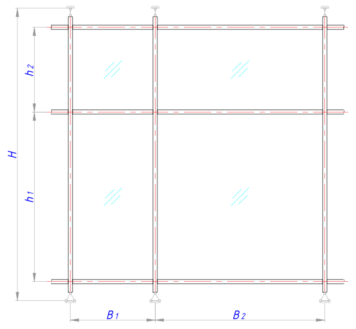

Конструктивная схема:
Конструктивные исходные данные:
м - высота конструкции (длина стойки / расстояние между точками крепления стойки);
м - шаг стоек;
м - шаг стоек;
м - шаг ригелей;
м - шаг ригелей;
см - толщина заполнения (если стеклопакет, то сумма толщин стёкол в стеклопакете);
см - расстояние от стойки до оси подкладки;
мм - допустимый прогиб для стойки;
мм - допустимый прогиб для ригеля (в направлении действия ветровой нагрузки);
мм - допустимый прогиб для ригеля (в направлении действия нагрузки от собственного веса и веса заполнения).
Физические свойства материалов:
кгс/см 2 - модуль упругости материала стойки и ригеля;
кгс/м 3 - удельный вес материала стойки и ригеля;
кгс/м 3 - удельный вес материала заполнения.
Сбор нагрузок:
кг/м 2 - предельное расчётное значение ветровой нагрузки (см. расчёт ветровой нагрузки);
кг/м - ветровая нагрузка, приведённая к линейной равномерно распределённой нагрузке на стойку;
кг/м - ветровая нагрузка, приведённая к линейной равномерно распределённой нагрузке на ригель;
кг - собственный вес наибольшего ригеля (зависит от площади сечения ригеля);
кг - собственный вес наибольшего поля заполнения.
Расчёт минимально необходимых геометрических характеристик сечений стойки и ригеля:
см 4 - минимально необходимый осевой момент инерции стойки;
см 4 - минимально необходимый осевой момент инерции ригеля от действия ветровой нагрузки;
см 4 - минимально необходимый осевой момент инерции ригеля от действия нагрузки от веса заполнения.
Проверяемые геометрические характеристики сечений стойки и ригеля:
см 2 - площадь сечения ригеля (из каталога профильной системы);
см 4 - осевой момент инерции стойки (из каталога профильной системы);
см 4 - осевой момент инерции ригеля (в направлении действия ветровой нагрузки - из каталога профильной системы);
см 4 - осевой момент инерции ригеля (в направлении действия нагрузки от собственного веса и веса заполнения - из каталога профильной системы).
Результаты расчёта:
мм - фактический прогиб стойки;
мм - фактический прогиб ригеля от действия ветровой нагрузки;
мм - фактический прогиб ригеля от действия нагрузки от веса заполнения.
мм - фактический прогиб ригеля от действия нагрузки от собственного веса.
мм - фактический суммарный прогиб ригеля от действия нагрузки от собственного веса и веса заполнения.